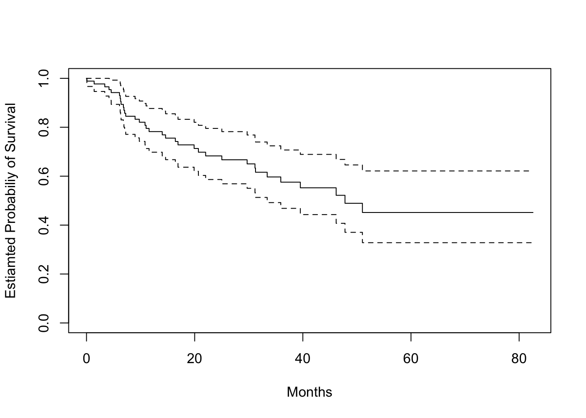
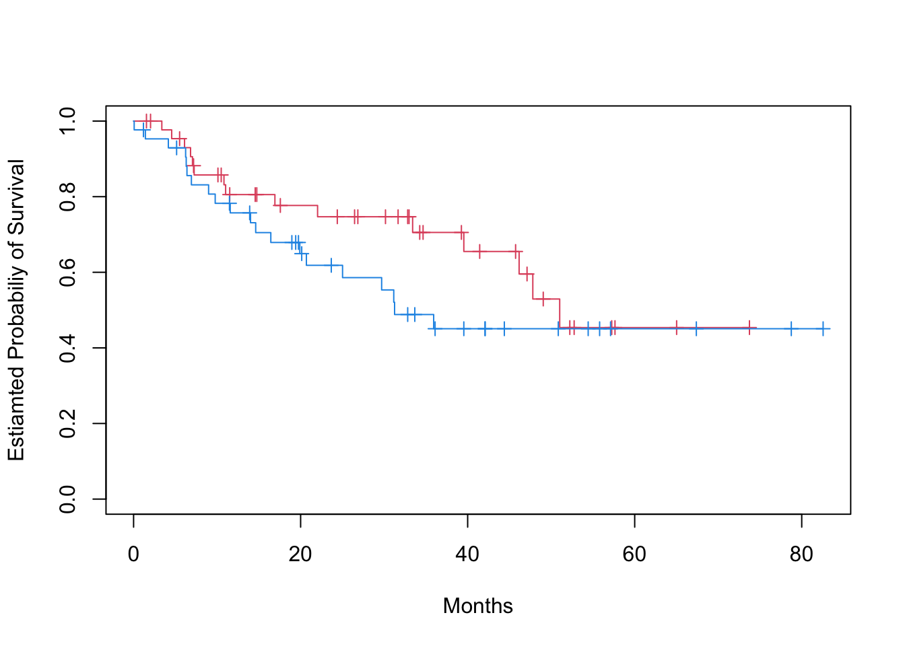
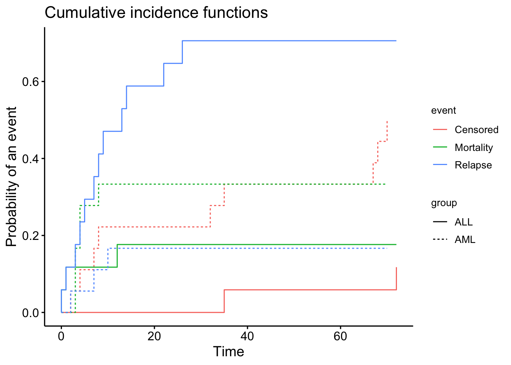

# status = 0, indicates a censored observation # status = 1, indicates an uncensored observation# Kaplan-Meier survival curvefit.surv <-survfit(Surv(time, status) ~1, data = data_brain)plot(fit.surv, xlab ="Months", ylab ="Estiamted Probabiliy of Survival")

# KM stratify by sexfit.surv <-survfit(Surv(time, status) ~ sex, data = data_brain)plot(fit.surv, mark.time =TRUE, col =c(2, 4), xlab ="Months", ylab ="Estiamted Probabiliy of Survival")

# Log-rank test to compare survival of men and womenlogrank_test <-survdiff(Surv(time, status) ~ sex, data = data_brain)print(logrank_test)## Call:## survdiff(formula = Surv(time, status) ~ sex, data = data_brain)## ## N Observed Expected (O-E)^2/E (O-E)^2/V## sex=Female 45 15 18.5 0.676 1.44## sex=Male 43 20 16.5 0.761 1.44## ## Chisq= 1.4 on 1 degrees of freedom, p= 0.2# Fit Cox proportional hazards modelfit.cox <-coxph(Surv(time, status) ~ sex, data = data_brain)summary(fit.cox)## Call:## coxph(formula = Surv(time, status) ~ sex, data = data_brain)## ## n= 88, number of events= 35 ## ## coef exp(coef) se(coef) z Pr(>|z|)## sexMale 0.4077 1.5033 0.3420 1.192 0.233## ## exp(coef) exp(-coef) lower .95 upper .95## sexMale 1.503 0.6652 0.769 2.939## ## Concordance= 0.565 (se = 0.045 )## Likelihood ratio test= 1.44 on 1 df, p=0.2## Wald test = 1.42 on 1 df, p=0.2## Score (logrank) test = 1.44 on 1 df, p=0.2# Test the proportional hazards assumption in the two gender groupsph_test <-cox.zph(fit.cox)print(ph_test)## chisq df p## sex 0.588 1 0.44## GLOBAL 0.588 1 0.44# Fit Cox model with multiple predictorsfit.cox_multi <-coxph(Surv(time, status) ~ sex + diagnosis + loc + ki + gtv + stereo, data = data_brain)summary(fit.cox_multi)## Call:## coxph(formula = Surv(time, status) ~ sex + diagnosis + loc + ## ki + gtv + stereo, data = data_brain)## ## n= 87, number of events= 35 ## (1 observation deleted due to missingness)## ## coef exp(coef) se(coef) z Pr(>|z|) ## sexMale 0.18375 1.20171 0.36036 0.510 0.61012 ## diagnosisLG glioma 0.91502 2.49683 0.63816 1.434 0.15161 ## diagnosisHG glioma 2.15457 8.62414 0.45052 4.782 1.73e-06 ***## diagnosisOther 0.88570 2.42467 0.65787 1.346 0.17821 ## locSupratentorial 0.44119 1.55456 0.70367 0.627 0.53066 ## ki -0.05496 0.94653 0.01831 -3.001 0.00269 ** ## gtv 0.03429 1.03489 0.02233 1.536 0.12466 ## stereoSRT 0.17778 1.19456 0.60158 0.296 0.76760 ## ---## Signif. codes: 0 '***' 0.001 '**' 0.01 '*' 0.05 '.' 0.1 ' ' 1## ## exp(coef) exp(-coef) lower .95 upper .95## sexMale 1.2017 0.8321 0.5930 2.4352## diagnosisLG glioma 2.4968 0.4005 0.7148 8.7215## diagnosisHG glioma 8.6241 0.1160 3.5664 20.8546## diagnosisOther 2.4247 0.4124 0.6678 8.8031## locSupratentorial 1.5546 0.6433 0.3914 6.1741## ki 0.9465 1.0565 0.9132 0.9811## gtv 1.0349 0.9663 0.9906 1.0812## stereoSRT 1.1946 0.8371 0.3674 3.8839## ## Concordance= 0.794 (se = 0.04 )## Likelihood ratio test= 41.37 on 8 df, p=2e-06## Wald test = 38.7 on 8 df, p=6e-06## Score (logrank) test = 46.59 on 8 df, p=2e-07# Plot survival curves for each diagnosis category, adjusting for other predictors# we set the values of the other predictors to the mean for quantitative predictors, # and to the modal value for factorsmodeldata <-data.frame(diagnosis =levels(data_brain$diagnosis), sex =rep("Female", 4), loc =rep("Supratentorial", 4), ki =rep(mean(data_brain$ki), 4),gtv =rep(mean(data_brain$gtv), 4),stereo =rep("SRT", 4))survplots <-survfit(fit.cox_multi, newdata = modeldata)plot(survplots, mark.time =FALSE, xlab ="Months", ylab ="Estiamted Probabiliy of Survival", col =2:5)legend("bottomleft", legend =levels(data_brain$diagnosis), col =2:5, lty =1)
A dataset with time-varying predictors will have multiple rows per individual, with different rows having different values for the time-varying predictors, reflecting how they change over time. Additionally, rather than having a single event time variable, each row will have two time variables indicating the beginning and end of the time interval represented by that row of data.
Here, we see a preview of the data_opioid dataset containing longitudinal information for 362 individuals, who at baseline had used non-prescribed pharmaceutical opioids (NPPO, “pain pills”), but were not dependent on NPPOs and had never used heroin.
Each row contains the time variables START and STOP which define the time interval (years from initiation of NPPO use) associated with that row.
Time-invariant variables in the dataset are constant over all rows for the same individual, while time-varying variables can change between rows.
Each (START, STOP] interval defines a period of time during which no variables changed.
Two time-varying variables in the dataset are heroin use (heroin) (the event indicator variable) and lifetime opioid dependence (dep_lifetime)
For instance, for this particular individual, male, started using NPPOs at age 19 (time invariant variables). He did not meet the criteria for lifetime opioid dependence at baseline (wave = 0), but did at the next interview (wave = 1) and he first reported using heroin at his 6th interview.
To model the heroin usage using both time-invariant and time-varying predictors, we can use the coxph function:
Whether a predictor is time-varying or time-invariant, its HR can be interpreted as a comparison of the hazard between groups of individuals with different values of that predictor. Thus, in this example, we could conclude that after adjusting for age at NPPO initiation and sex, those with lifetime opioid dependence have 2.88 times the hazard of using heroin as those who do not (AHR = 2.88; 95% CI = 1.32, 6.30; p = 0.008). The HR for a time-varying predictor, however, can also be interpreted as the effect of within-individual change on the hazard. If an individual without opioid dependence transitions to dependence, their hazard of transitioning to heroin is multiplied by 2.88.
3.3 Competing risks
3.3.1 Comparing CIFs
Let’s demonstrate how to analyze competing risks using the cmprsk package in R. This package includes functions for estimating the cumulative incidence function (CIF) in the presence of competing risks.
Bone marrow transplant (BMT) data from the cmprsk package includes information for 35 leukemia cancer patients who underwent bone marrow transplantation. The data includes the following variables:
# Estimate the cumulative incidence functions fo each even type per groupcif <-cuminc(ftime = data_bmt$ftime, fstatus = data_bmt$status, group = data_bmt$dis) # Estimates will calculated within groups# Plot the CIFs for both event types using survminer packageggcompetingrisks(cif, multiple_panels =FALSE, legend ="right")

# Show Gray's test for equality of CIFsprint(cif$Tests)## stat pv df## Censored 5.9785107 0.014481226 1## Mortality 0.9133497 0.339227192 1## Relapse 9.4874094 0.002068867 1
Gray’s test for equality of CIFs across groups (ALL vs. AML) is split across different types of events, here (Censored, Mortality, and Relapse).
For Censored, the p-value is small and suggest that there isa statistically significant difference in the CIF for censored events between the groups.
For Mortality, the p-value is greater than 0.05, suggesting that there is no statistically significant difference in the CIF for mortality between the groups.
For Relapse, the p-value is less than 0.05, indicating a statistically significant difference in the CIF for relapse between the groups.
The above suggest that the groups are behaving differently in terms of the time to relapse and censored events, but not for mortality.
We are interested in modeling time to relapse in the presence of transplant-related death (competing event). We want to sutdy the effect on relapse of sex, disease type, phase at transplant, source of stem cells and age.
The first part of the output shows for each term in the design matrix the estimated coefficient \(\hat{\beta}_j\), the relative risk \(\mathrm{exp}(\hat{\beta}_j)\), the standard error, the z-value and the corresponding P-value for assessing significance.
Here, Sex is not significant, followed by Age and D (disease type), whereas Source is only marginally significant. Phase is a factor with relapse as baseline, so each P-value provides a test for the difference of each level with respect to the baseline.
An overall P-value for Phase can be obtained through the Wald test via aod R package:
The first argument to the function wald.test() is the estimated covariance matrix for the coefficients, followed by the vector of coefficients estimates, and the position of coefficients for which we want to assess significance. In our case, the P-value indicates that Phase is statistically significant.
The second part of the output for competing risks regression shows the relative risk for each term, and a 95% confidence interval. The relative risk or subdistribution hazard ratio for a categorical covariate is the ratio of subdistribution hazards for the actual group with respect to the baseline, with all other covariates being equal. If the covariate is continuous then the relative risk refers to the effect of a one unit increase in the covariate, with all other covariates being equal. In our data, exp(−0.0352)=0.965 is the relative risk of a woman with respect to a man, and exp(−0.0185)=0.982 is the relative risk for a 1 year increase in age.
The last part of the output shows the pseudo log-likelihood at maximum and the pseudo likelihood ratio test, that is, the difference in the objective function at the global null and at the final estimates. As this objective function is not a true likelihood, this test statistic is not asymptotically distributed as a χ2. As a consequence, model comparison based on likelihood ratio approach cannot be performed directly, but significance must be evaluated through simulations. However, a model selection criterion can be easily adopted as described in the following section.
For an example on model selection, model diagnostics or adding time-varying covariates in presence of competing events, please refer to the original tutorial article Scrucca, Santucci, and Aversa (2010)https://www.nature.com/articles/bmt2009359.
Scrucca, L, A Santucci, and F Aversa. 2010. “Regression Modeling of Competing Risk Using r: An in Depth Guide for Clinicians.”Bone Marrow Transplantation 45: 1388–95. https://doi.org/10.1038/bmt.2009.359.